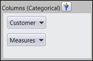
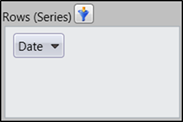
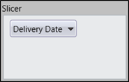

There are three different types of Axis Element Builder available namely:
The categorical axis defines one or more dimensions that are displayed along the Chart's x-axis as labels and in the columns of Grid. If more than one dimension is on the categorical axis, the Chart/Grid will stack each dimension. The order in which the dimensions are stacked on the Chart/Grid is based on the order that they appear on the categorical axis.
The series axis defines one or more dimensions that are displayed as a series. If more than one dimension is present on the series axis, each data point will be defined by a unique combination of the dimensions members.
The slicer axis is used as a filter to narrow the focus of the multidimensional data displayed in the Chart/Grid. The slicer axis lets you analyse any member of a dimension in-depth. In order to display the member's data in Slicer, that member must not be present on either the categorical or series axis.

Figure 29: Categorical Axis Element Builder

Figure 30: Series Axis Element Builder

Figure 31: Slicer Axis Element Builder